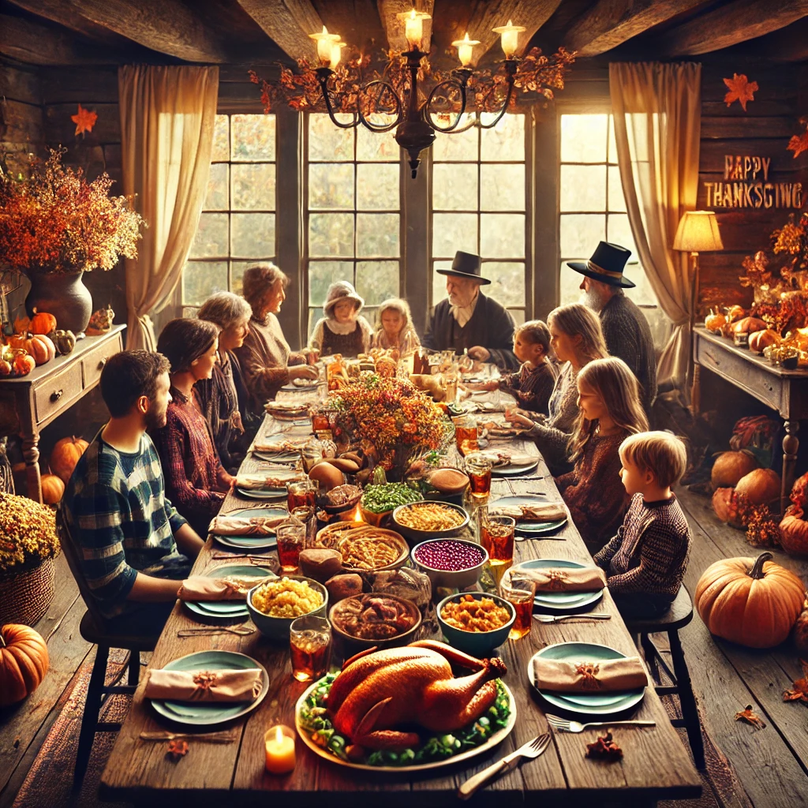
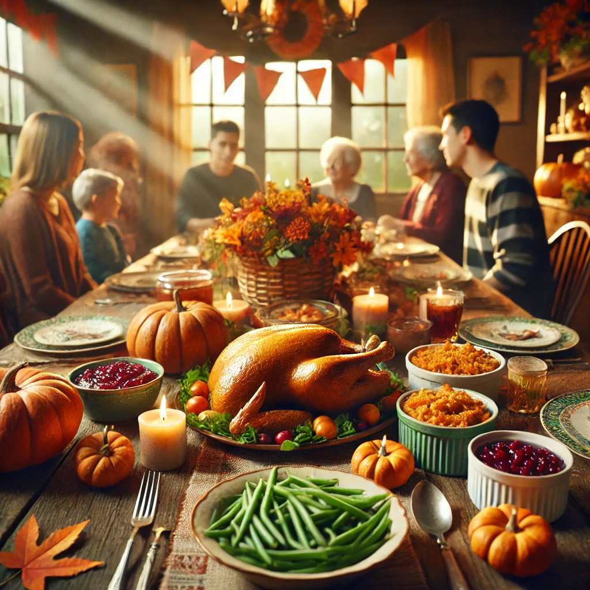
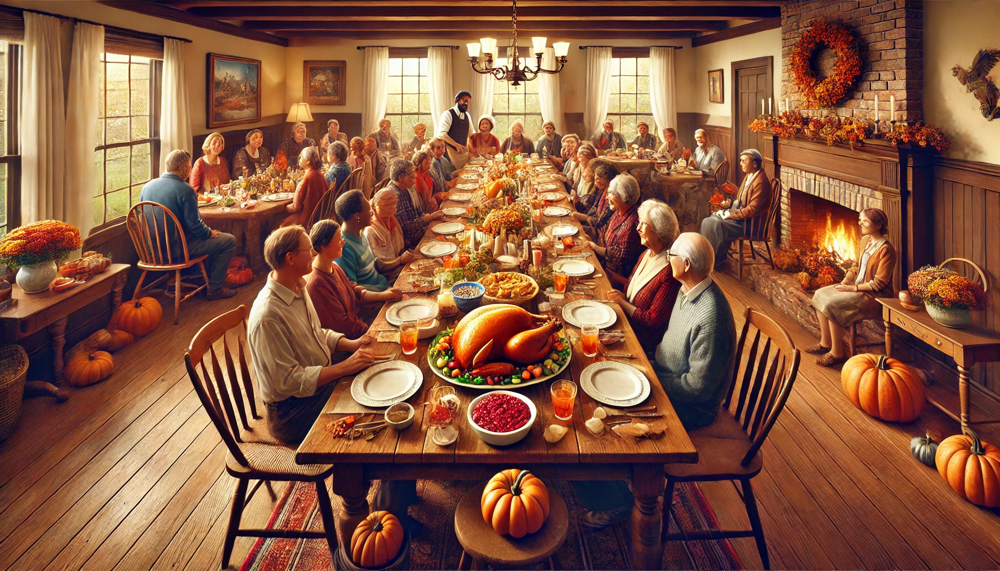

AÇÃO DE GRAÇAS
O Dia de Ação de Graças, também conhecido como Thanksgiving em inglês, é uma celebração
primordialmente observada
nos Estados Unidos e Canadá, dedicada a expressar gratidão pelas bênçãos acumuladas ao longo do ano.
Embora fortemente enraizada nas tradições norte-americanas, a essência deste feriado ultrapassa barreiras
culturais,
focando-se no agradecimento e na celebração entre familiares e amigos.
Origens Históricas
O feriado tem profundas raízes históricas em ambos, Estados Unidos e Canadá, associadas a diferentes eventos
significativos.
Nos Estados Unidos, o Dia de Ação de Graças é celebrado na quarta quinta-feira de novembro,
remontando ao ano de 1621 em Plymouth, Massachusetts. Esta primeira celebração foi um festival de colheita
que durou três dias,
marcado pela cooperação entre os colonos europeus, liderados por William Bradford, e os nativos Wampanoag,
simbolizando um raro momento de concórdia e partilha cultural.
No Canadá, o feriado ocorre na segunda segunda-feira de outubro, originado das celebrações por viagens
seguras e
colheitas férteis, com destaque para a expedição de Martin Frobisher em 1578 pelo difícil Atlântico Norte.
Tradições Modernas
Atualmente, o Dia de Ação de Graças é caracterizado por amplas reuniões familiares e um opulento banquete.
Entre os pratos tradicionais estão o peru assado, purê de batatas, molho de cranberry,
e uma variedade de pratos à base de abóbora, culminando com tortas de maçã ou abóbora.
A data também é marcada por tradições como assistir a desfiles e jogos de futebol americano,
sendo o Desfile de Ação de Graças da Macy's em Nova York um dos eventos mais emblemáticos.
Significado Espiritual e Social
Espiritualmente, o feriado é um momento de reflexão sobre as graças alcançadas e de reconhecimento das
pequenas e
grandes bênçãos da vida. Socialmente, incentiva a união, a generosidade e a expressão de gratidão, com
muitos aproveitando
a ocasião para oferecer seu tempo ou recursos a instituições de caridade, reforçando o espírito de
solidariedade.
Mais do que uma celebração culinária, o Dia de Ação de Graças é uma festividade de gratidão que une as
pessoas para
valorizar os bens que possuem, independentemente dos obstáculos ou adversidades. É um momento para celebrar
a prosperidade
e a comunidade, perpetuando a tradição de valorizar as numerosas bênçãos da vida.


Ação de Graças está diretamente ligada à gratidão porque o propósito central da celebração é expressar
reconhecimento e agradecimento pelas bênçãos recebidas ao longo do ano.
Seja por boas colheitas, saúde, conquistas pessoais ou o apoio de familiares e amigos, o feriado convida as
pessoas a refletirem
sobre o que têm e a valorizar essas dádivas, cultivando um espírito de gratidão.
A prática de reunir-se em família para um jantar especial também reforça a ideia de reconhecer o que é
importante na vida e
demonstrar apreço por isso.
A gratidão, como conceito central da Ação de Graças, vai além de simplesmente dizer “obrigado”.
Ela envolve um sentimento profundo de reconhecimento pelo que temos, mesmo em meio a desafios.
Esse feriado nos convida a pausar e refletir sobre nossas bênçãos, cultivando uma mentalidade mais positiva
e
conectando-nos com os outros de forma significativa.
Além disso, praticar a gratidão, como no espírito da Ação de Graças, pode trazer benefícios emocionais e
físicos comprovados,
como reduzir o estresse, melhorar os relacionamentos e aumentar a felicidade. É uma oportunidade de
fortalecer laços,
lembrar-nos do que é realmente importante e promover um senso de comunidade.
